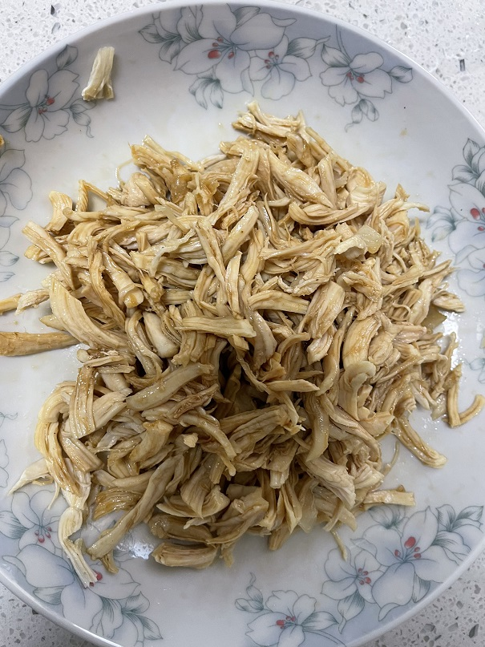

凉拌鸡丝的做法
 隔离期间的一道快手菜，少油低卡，制作简单，预计制作时间 30 分钟
预估烹饪难度：★★★
必备原料和工具
- 鸡胸肉（常温冷冻均可）
- 麻油（花椒油）
- 生抽
- 香醋
- 白糖
- 盐
- 料酒
- 姜
- 凉白开水
计算
每份：
- 鸡胸肉 200 克
- 麻油 5 毫升
- 生抽 4 毫升
- 香醋 4 毫升
- 白糖 3 克
- 盐 2 克
- 姜 20 克
操作
- 姜切片，备用
- 锅中倒入 4 升水
- 加入鸡胸肉、姜片
- 倒入 20 毫升料酒
- 开大火不盖盖将水烧开
- 水开后转中火，用勺子将浮沫捞出
- 继续煮 5-7 分钟，如果是非冷冻肉煮 5 分钟，冷冻肉煮 7 分钟
- 鸡胸肉大小会影响成熟时间，用筷子插入鸡胸肉，如果能轻松插入，代表鸡肉熟了。如果不熟需延长煮制时间
- 用凉白开水冲泡鸡胸肉，使鸡胸肉降至室温
- 顺着鸡胸肉纹理将鸡胸肉撕成细丝
- 准备一个碗
- 碗中加入准备好的麻油、生抽、香醋、白糖、盐
- 搅拌料汁，使糖和盐尽量溶化
- 将料汁倒入鸡丝中，搅拌均匀
附加内容
- 这道菜是隔离期间用现有材料做的，有条件可以加入香菜、小葱等进行调味，喜欢吃辣的可以加入辣椒油
如果您遵循本指南的制作流程而发现有问题或可以改进的流程，请提出 Issue 或 Pull request 。